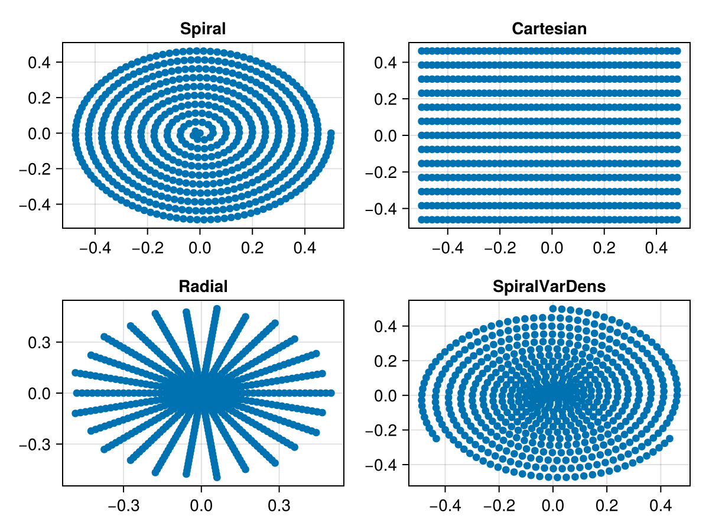

Trajectory
Several typical MRI k-space trajectories are available:
- Cartesian
- EPI
- Radial
- Spiral
In addition, it is also possible to define new k-space trajectories. Currently, most of the trajectories are only available in 2D. Each trajectory is of type Trajectory and implements the following functions
string(tr::Trajectory)
kspaceNodes(tr::Trajectory)
readoutTimes(tr::Trajectory)For instance we can define a spiral, radial, and cartesian trajectory using
tr = trajectory("Spiral", 1, 600, windings=10)
tr = trajectory("Cartesian", 13, 50, EPI_factor=1)
tr = trajectory("Radial", 13, 50)A variable density spiral can be generated by
tr = trajectory("SpiralVarDens", 3, 200)The k-space nodes can then be accessed by
nodes = kspaceNodes(tr)The script generating the following image can be executed by running the following from within the Julia REPL:
include(joinpath(dirname(pathof(MRIReco)),"../docs/src/examples/exampleTrajectories.jl"))